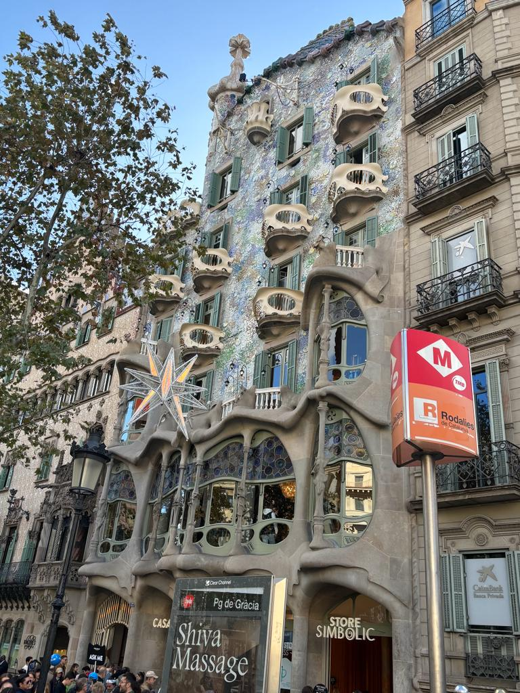
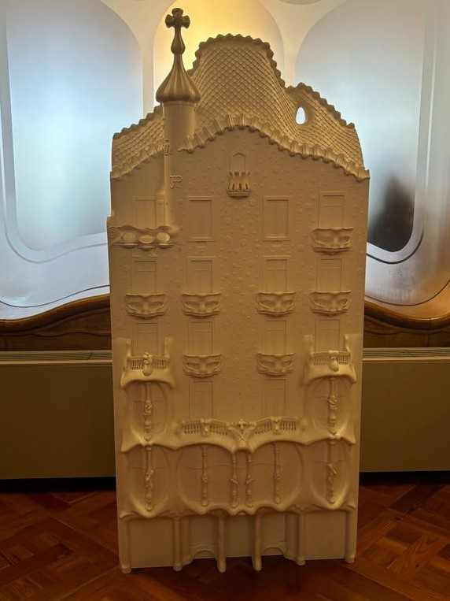

___ Die Sagrada Familia
Die Sagrada Familia in Barcelona ist ein architektonisches Wunderwerk und ein Meisterwerk des berühmten Architekten Antoni Gaudí.
Der Bau dieser beeindruckenden Basilika begann im Jahr 1882 und ist bis heute nicht abgeschlossen.
Die Sagrada Familia ist bekannt für ihre einzigartige und surreale Architektur, die von der Natur und religiösen Symbolen inspiriert ist.
Die Fassaden der Basilika sind mit komplexen Skulpturen und religiösen Motiven verziert.
Ihr Inneres beeindruckt mit kunstvollen Säulen und farbenfrohen Glasfenstern, die ein faszinierendes Spiel mit Licht und Schatten erzeugen.
Die Sagrada Familia ist nicht nur ein architektonisches Meisterwerk, sondern auch ein Symbol für Barcelona und die Vision eines außergewöhnlichen Künstlers.
Der Besuch dieses einzigartigen Ortes ist eine Reise in die Welt der Kunst und Spiritualität.
Zu den Tickets

___ Das Casa Batllo
Die Casa Batlló in Barcelona ist zweifellos das schönste Gebäude, das ich je gesehen haben.
Dieses architektonische Meisterwerk wurde von dem berühmten Architekten Antoni Gaudí entworfen und ist ein herausragendes Beispiel für den modernistischen Stil.
Das Gebäude zeichnet sich durch seine organischen Formen, die lebendigen Farben und die kreativen Details aus, die eine einzigartige Harmonie schaffen.
Die Casa Batlló ist eine Hommage an die künstlerische Vision von Gaudí und vermittelt den Besuchern das Gefühl, in einem Märchenland zu sein.
Es ist zweifellos ein unvergesslicher Ort und ein Muss für jeden Kunst- und Architekturbegeisterten in Barcelona.
Zu den Tickets ___

Geheimtipp
___ Palau Güell
Der Palau Güell in Barcelona ist ein Geheimtipp für jene, die von Antoni Gaudí nicht genug bekommen können.
Im Vergleich zu den bekannteren Werken wie der Sagrada Familia oder dem Park Güell, bleibt der Palau Güell oft unentdeckt.
Dieses Juwel des Modernisme-Stils bietet eine faszinierende Erfahrung, da es weniger überlaufene Besucherströme gibt.
Hier können Gaudí-Enthusiasten die Detailverliebtheit des Architekten in seiner reinsten Form bewundern.
Die reich verzierten Räume und die beeindruckende Dachterrasse des Palau Güell sind ein Muss für jeden, der die einzigartige Kreativität und Meisterschaft von Gaudí in einer ruhigeren Atmosphäre erleben möchte.
Zu den Tickets
 ___
___